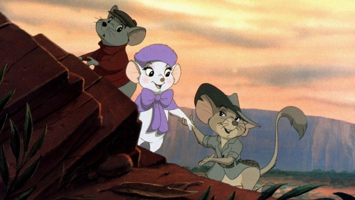

While most people probably fondly remember "The Rescuers" from 1977, I instead fondly remember it's lesser-known sequel, "The Rescuers Down Under." After decades of avoiding it, this was the first sequel to a Disney film, and a theatrical one too! The practice would be repeated to mixed results for a lot of old Disney movies in the 1990's and 2000's, but all of them would be direct-to-video. Under new management and with new directors compared to when the first movie released, "Down Under" was clearly an attempt to cash in on easy money. The first movie made a fair profit, likely thanks to its unique and serious premise, and the potential for continuing adventures for the lead characters (Bernard and Bianca) felt limitless. It also happened that Australia was a trendy country at the time, thanks to the success of "Crocodile Dundee," Steven Irwin, Outback Steakhouse, and more (the dates don't all coincide, but you get the idea). Ironically, the box office returns for "Down Under" were disappointing, in part because of releasing during a busy movie weekend (an obvious mistake not made again until 2011's "Winnie the Pooh"), and the movie was largely forgotten as being released between classics "The Little Mermaid" and "Beauty and the Beast."But the trailers looked really cool to a kid-version of me, and I watched the sequel often on VHS, far more than the original. Australia was a much better setting than the American swamps, and to make the sequel more marketable, it's a lot more fun than the somber first movie. And the updated production values make it worth watching even today: your jaw might drop to see the first and second movies back to back. "Down Under" might not be as true a classic, but it's a better audience movie in almost every way. Part of the reason I sometimes like cartoon sequels is because it gives us a chance to visit old characters we thought we'd never see again. This time, Bernard and Bianca are celebrated heroes of The Rescue Aid Society, and when an urgent call comes from a kidnapping in Australia, they're the first choices to go. This means interrupting a romantic dinner where Bernard was about to propose for marriage. As they charter their way to the other end of the world, Bernard keeps trying to find (and miss) the opportunity to present the wedding ring, and their charismatic Australian guide Jake might flirt his way in between the two. The story of Bernard and Bianca are a fun way to remember the Rescue Society, but the plot of the boy victim is even more engaging. Through the movie's introduction, we see Cody is a intrepid and independent animal rescuer in Australia, talking with and working with other animals to find those stuck in poacher traps. This morning, he finds a massive golden eagle, the size of a bus, trapped in one such snare, and frees it. As a sign of gratitutde, there's an incredible sequence of the bird flying Cody through the skies, letting him see her nest of eggs, before returning him down to the valley. It's there that an square-jawed illegal poacher named McLeach catches Cody, recognizes his gifted golden feather, and kidnaps the boy until he tells him where the rare bird is. Part of the fun of this exciting opening is seeing a small mouse Cody helped running off to a tiny morse-code office to send a message about the kidnapping, and recognizing that it'll lead us to the heroes of the first movie.  In that first movie, Penny wasn't entirely helpless, but was still a lost little girl. Here, Cody is much more independent and a hero in his own right, so his sideplot is just as engaging, if not more so, than that of the Rescuers. Despite McLeach being a threatening menace, his low education and greed make him entertaining, as well as his pet egg-eating/stealing lizard Johannah. The movie makes the most of the exotic setting and its animals, and there's a greater sense of action and adventure from the two plot threads. There are also some clever nods: Bianca and Bernard use the bird Wilbur, voiced by John Candy, as their plane this time, as Orville's original actor died, and this was a direct followup to both being named after the Wright brothers (Wilbur's getting lost in Australia is a third sideplot for comic relief). The updated production values help make the adventure even more engaging. There are some incredible shots made possible through the use of CGI and digital compositing, the first of its kind for Disney. Some of these shots of the endless outback, or the golden eagle's flight, are truly breathtaking, and the character animation is smoother than ever. This is a bit of an exaggeration: a lot of 90's animation looked as good as this, if not better. But this was one of the first to look this fresh, this clean, this big of a spectacle. Paired with a strong voice cast and an Australian-themed score (no muscial numbers), and we get a strong cinematic experience. It's easy to claim "The Rescuers Down Under" is a throwaway compared to the original, or Disney's other movies, but you'd be missing out on one of the most exciting animated movies in their catalog. It's a shame it didn't perform better, or that the many other direct-to-video Disney sequels weren't produced with this level of quality.
- "Ani" More reviews can be found at : https://2danicritic.github.io/ Previous review: review_The_Rescuers Next review: review_The_Return_of_the_King